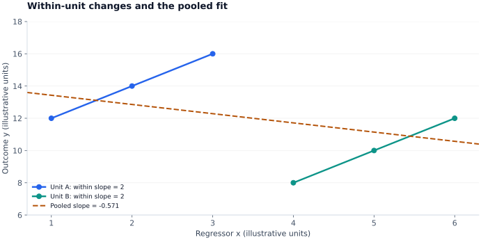

Fixed effects and first differences
Following the same units lets us compare each unit with itself. Fixed effects remove additive characteristics that do not change over time, while leaving the identification problem for time-varying factors explicit.
A panel has both unit and time indices
Let $i=1,\ldots,N$ index units and $t=1,\ldots,T_i$ their observed periods. A balanced panel has the same dates for every unit; an unbalanced panel does not. Check identifiers, duplicate unit-date records, date gaps, and attrition before choosing an estimator.
The additive unit effect $c_i$ may capture persistent productivity, a firm's location, or an individual's stable characteristics. If it is correlated with the regressors, ignoring it generally violates pooled OLS exogeneity. Fixed effects permit this correlation; they still require restrictions on the idiosyncratic disturbance $\varepsilon_{it}$.
The within transformation removes the unit effect
Average the equation across the observed dates of unit $i$ and subtract that average from each observation:
Both $a$ and $c_i$ disappear. OLS on these deviations estimates the within slope, provided the transformed regressors have sufficient rank. A usual static-panel condition is
This strict exogeneity condition rules out feedback from today's idiosyncratic shock into future regressors. It is stronger than saying only that $x_{it}$ is uncorrelated with today's disturbance. Selective attrition can also undermine the required observed-sample conditions.
Only within-unit variation identifies $\beta$. A time-invariant regressor becomes zero after demeaning, so its separate coefficient cannot be estimated with unit fixed effects. A regressor that changes very little may be identified imprecisely even when it is not exactly absorbed.
LSDV and the Frisch-Waugh-Lovell connection
Write the stacked model as $y=X\beta+D\alpha+\varepsilon$, where $D$ contains unit indicators and redundant intercept columns are omitted. Removing the projection on $D$ gives
Since $M_DD=0$, regression with unit dummies (LSDV) and the within transformation give the same slope estimates. Degrees of freedom must account for the estimated effects and the chosen covariance convention; treating demeaned observations as an untouched independent sample gives misleading standard errors.
Add time effects $\lambda_t$ to absorb shocks common to all units at a date. In a balanced, unweighted panel, subtracting unit and time means and adding the grand mean implements two-way residualization. For a general unbalanced panel, a single such subtraction is not generally equivalent to the full dummy-variable projection; use an estimator that absorbs both sets of effects correctly.
Worked example: within and between tell different stories
Consider two illustrative units, each observed three times:
| Unit | Regressor $x$ | Outcome $y$ | Unit mean |
|---|---|---|---|
| A | 1, 2, 3 | 12, 14, 16 | $\bar x_A=2$, $\bar y_A=14$ |
| B | 4, 5, 6 | 8, 10, 12 | $\bar x_B=5$, $\bar y_B=10$ |
Within either unit, $\tilde x=(-1,0,1)$ and $\tilde y=(-2,0,2)$, so $\hat\beta_{FE}=8/4=2$. Across the six pooled observations, however, the intercept-and-slope regression gives $\hat\beta_{pooled}=-10/17.5\approx-0.571$. The reversal occurs because B has a higher average $x$ but a lower unit intercept.

First differences offer another transformation
Differencing also removes $c_i$. With two observed periods and the same specification, FE and first differences give the same slopes. For more periods, their relative efficiency depends on the idiosyncratic error process: FE uses the spherical-error structure efficiently, while differencing can be attractive when levels errors are highly persistent. Neither is automatically best for every serial-correlation pattern.
If levels errors are serially uncorrelated with variance $\sigma_\varepsilon^2$, differenced errors have variance $2\sigma_\varepsilon^2$ and adjacent covariance $-\sigma_\varepsilon^2$. Do not assume differencing creates independent errors. In an irregular panel, a change across a multi-year gap is not the same interval as a one-year first difference.
Inference and what fixed effects do not remove
Unit-clustered covariance allows heteroskedasticity and arbitrary serial dependence within units under an appropriate many-independent-units asymptotic framework. Shared date shocks or group-level treatment assignment may require a different or additional clustering dimension. Few clusters call for methods suited to that setting.
Fixed effects remove additive time-invariant confounding. They do not remove time-varying confounders, reverse causality, measurement error, or selection into observation. Adding a lagged dependent variable creates a further problem in short panels: the within transformation induces regressor-error correlation, motivating dynamic-panel methods.
Study sources and further reading
Study basis: personal OLS and Panel Data Models, PDF pp. 23–24 and 29. For implementation details, see the official linearmodels panel formulas.
The explanations and numerical examples here are a rewritten study synthesis. Examples use illustrative inputs unless stated otherwise; the original study PDFs are not redistributed.